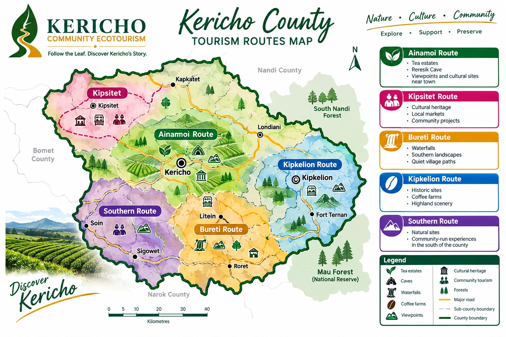

Travel in one direction. See more. Spend less time on the road.

Kericho is a large county, and its sites are spread across different areas. Rather than send visitors zig-zagging from one end to the other, we've grouped our sites into five geographic routes — so you can explore one cluster at a time, in a logical direction.
Each route is led by local guides, includes community-run experiences, and can be adapted for half-day, full-day or multi-day visits.
Best for: First-time visitors, tea lovers, half-day trips
Duration: Half-day to full-day
Best for: Cultural heritage, community visits
Duration: Half-day
Best for: Nature lovers, waterfall seekers, southern exploration
Duration: Full-day
Best for: History, coffee, highland scenery
Duration: Full-day
Best for: Off-the-beaten-path travel, longer stays
Duration: Full-day or multi-day
Every visitor is different. Some want a quick half-day tea experience. Others want to spend three days exploring caves, culture and community projects.
Tell us what you're interested in, how much time you have, and how many people are travelling — and we'll design a route that works.
Request a Custom RouteMost of our routes can include:
Charges vary by route, group size and duration. See our Charges & Pricing page for details.